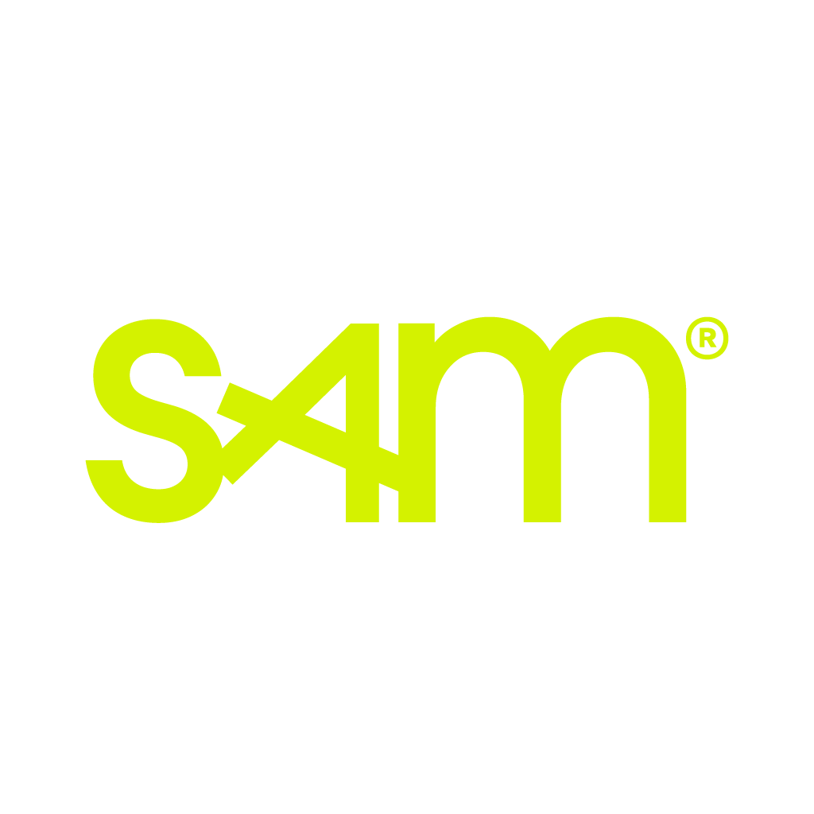

☀ Ochtendprogramma
09:00
Ontvangst & kennismaking
Koffie, thee en worstenbroodjes op het landgoed. Deelnemers leren elkaar kennen en verkennen de omgeving van Bernardus Golf.
Iedereen · 45 min
Brabant Pavillion
Plenair blok · 45 min totaal
09:45
Plenaire aftrap
Welkomstwoord en opening van de dag. De Solheim Cup als platform voor verandering. Introductie van de twee pijlers Celebrate Nature en Celebrate Women, en het dagprogramma.
Iedereen · 15 min
🎤 Jeroen Stevens
Bernardus Clubhouse / Main Stage Fanzone
10:00
🌿 Celebrate Nature · 15 min
De Solheim Cup 2026 zet een nieuwe standaard voor duurzame sportevenementen. Bernardus Golf — GEO-gecertificeerd, BREEAM-gebouwen, geen synthetische bestrijdingsmiddelen — is het levende bewijs dat golf en natuur kunnen samengaan. We bespreken de duurzaamheidsaanpak: zero-emissie mobiliteit, hernieuwbare energie, circulaire materialen, lokaal voedsel en actief natuurherstel.
⚡ Celebrate Women · 15 min
Slechts 15% van alle sportmedia-aandacht gaat naar vrouwen. Vrouwensport ontvangt 10% van het sponsorbudget. Slechts 1 op de 4 sportbestuurders is vrouw. De Solheim Cup — het grootste vrouwensportevenement van 2026 — is meer dan een golftoernooi. Het is een platform om dit te veranderen.
Iedereen · 2 × 15 min
Totaal plenair: 45 min ✓
Ronde 1 · 3 parallelle smaken · 45 min · deelnemers kiezen zelf
10:30
🌿 Celebrate Nature
Veldbezoek & rondleiding: biodiversiteitsstroken, bijenkasten en wilde bijenburchten, waterhuishouding, Van Gogh NP partnerschap. Kennisdeling met golfbanen en partners over de GEO-gecertificeerde aanpak van Bernardus.
Rondleiding over het terrein
⚡ Celebrate Women
Inspiratielezing door een extern vrouwelijk rolmodel, gevolgd door co-creatie: welke rol spelen golfbanen, bonden en partners? In golf is de verhouding 68,5% man vs. 31,5% vrouw — bij de leeftijdsgroep 25–50 jaar zelfs 76% vs. 24%. De Solheim Cup is het podium om dit te doorbreken. We delen ook de eerste resultaten van het programma Gelijkspel in Sport, waarbij drie Brabantse golfclubs hebben meegedaan. Concrete afspraken en actiepunten als output.
Bernardus Clubhouse / Bernardus Bar

in samenwerking met Stichting SAM
⛳ Live PING Junior
Begeleide wandeling langs de baan. Toelichting op format en talenten. De volgende generatie vrouwelijke golfers in actie.
1st Tee
↑ 10:30 – 11:15
11:15
Pauze
Koffie en thee. Ruimte om van groep te wisselen voor ronde 2.
Iedereen · 15 min
↻ Dezelfde drie smaken herhalen zich — iedereen kan van smaak wisselen
Ronde 2 · 3 parallelle smaken · 45 min
11:30
Veldbezoek & rondleiding: biodiversiteitsstroken, bijenkasten en wilde bijenburchten, waterhuishouding, Van Gogh NP partnerschap. Kennisdeling met golfbanen en partners over de GEO-gecertificeerde aanpak van Bernardus.
Rondleiding over het terrein
Inspiratielezing door een extern vrouwelijk rolmodel, gevolgd door co-creatie: welke rol spelen golfbanen, bonden en partners? In golf is de verhouding 68,5% man vs. 31,5% vrouw — bij de leeftijdsgroep 25–50 jaar zelfs 76% vs. 24%. De Solheim Cup is het podium om dit te doorbreken. We delen ook de eerste resultaten van het programma Gelijkspel in Sport, waarbij drie Brabantse golfclubs hebben meegedaan. Concrete afspraken en actiepunten als output.
Bernardus Clubhouse / Bernardus Bar
in samenwerking met Stichting SAM
Begeleide wandeling langs de baan. Toelichting op format en talenten. De volgende generatie vrouwelijke golfers in actie.
1st Tee
↑ 11:30 – 12:15
12:15
Gezamenlijke lunch · Noble Kitchen
Lunch met lokale en seizoensgebonden ingrediënten. Informele uitwisseling en netwerk.
Iedereen · 90 min
Brabant Pavillion
🌤 Middagprogramma · herhaling volledig programma voor nieuwe groep
Plenair blok · 45 min totaal
13:45
Plenaire aftrap middag
Welkomstwoord voor de middaggroep. Introductie van de dag, de twee pijlers en het programma voor nieuwe aanwezigen.
Iedereen · 15 min
🎤 Jeroen Stevens
Bernardus Clubhouse / Main Stage Fanzone
14:00
🌿 Celebrate Nature · 15 min
Herhaling introductie duurzaamheidsambities: GEO-certificering, BREEAM, nul-op-de-meter ambitie en actief biodiversiteitsherstel op Bernardus Golf als voorbeeld voor de golfsector.
⚡ Celebrate Women / SAM · 15 min
Herhaling SAM-introductie voor de middaggroep. Zelfde inhoud, nieuwe deelnemers.
Iedereen · 2 × 15 min
Totaal plenair: 45 min ✓
Ronde 3 · 3 parallelle smaken · 45 min
14:45
Veldbezoek & rondleiding: biodiversiteitsstroken, bijenkasten en wilde bijenburchten, waterhuishouding, Van Gogh NP partnerschap. Kennisdeling met golfbanen en partners over de GEO-gecertificeerde aanpak van Bernardus.
Rondleiding over het terrein
Inspiratielezing door een extern vrouwelijk rolmodel, gevolgd door co-creatie: welke rol spelen golfbanen, bonden en partners? In golf is de verhouding 68,5% man vs. 31,5% vrouw — bij de leeftijdsgroep 25–50 jaar zelfs 76% vs. 24%. De Solheim Cup is het podium om dit te doorbreken. We delen ook de eerste resultaten van het programma Gelijkspel in Sport, waarbij drie Brabantse golfclubs hebben meegedaan. Concrete afspraken en actiepunten als output.
Bernardus Clubhouse / Bernardus Bar
in samenwerking met Stichting SAM
Begeleide wandeling langs de baan. Toelichting op format en talenten. De volgende generatie vrouwelijke golfers in actie.
1st Tee
↑ 14:45 – 15:30
15:30
Pauze
Koffie en thee. Ruimte om van groep te wisselen voor ronde 4.
Iedereen · 15 min
↻ Dezelfde drie smaken herhalen zich — iedereen kan van smaak wisselen
Ronde 4 · 3 parallelle smaken · 45 min
15:45
Veldbezoek & rondleiding: biodiversiteitsstroken, bijenkasten en wilde bijenburchten, waterhuishouding, Van Gogh NP partnerschap. Kennisdeling met golfbanen en partners over de GEO-gecertificeerde aanpak van Bernardus.
Rondleiding over het terrein
Inspiratielezing door een extern vrouwelijk rolmodel, gevolgd door co-creatie: welke rol spelen golfbanen, bonden en partners? In golf is de verhouding 68,5% man vs. 31,5% vrouw — bij de leeftijdsgroep 25–50 jaar zelfs 76% vs. 24%. De Solheim Cup is het podium om dit te doorbreken. We delen ook de eerste resultaten van het programma Gelijkspel in Sport, waarbij drie Brabantse golfclubs hebben meegedaan. Concrete afspraken en actiepunten als output.
Bernardus Clubhouse / Bernardus Bar
in samenwerking met Stichting SAM
Begeleide wandeling langs de baan. Toelichting op format en talenten. De volgende generatie vrouwelijke golfers in actie.
1st Tee
↑ 15:45 – 16:30
16:30
Informele borrel & netwerk
Borrel op het terras van Bernardus Golf. Gelegenheid om nieuwe partnerships te bespreken en de dag af te sluiten in de natuur.
Vrij · tot ± 18:00
Bernardus Bar
Capaciteit per ronde
| Smaak | Groepen | Pers. |
|---|
| Celebrate Nature | 2 × 1 gids | 40 |
| Celebrate Women | 2 × 1 facilitator + externe spreker/inspirerend vrouwelijk rolmodel | 40 |
| Live PING Junior | 2 × 1 begeleider | 40 |
| Per ronde | | ±120 |
Per dagdeel 2 rondes → 120 unieke deelnemers.
Ochtend + middag → ±240 totaal over de dag.
| Begeleiders per dagdeel | Aantal |
|---|
| Rondleidingsgidsen (Nature) | 4 |
| Gespreksleiders (SAM) | 4 |
| PING Junior begeleider | 2 |
| Totaal | 10 |
Deelnamekosten
| Wat is inbegrepen voor deelnemers |
|---|
| Bijdrage per persoon: € 50,00 |
| Ontvangst koffie & gebak | ✓ |
| Pauze koffie & thee | ✓ |
| Lunch Noble Kitchen | ✓ |
| Borrel | ✓ |
| Alle breakout sessies | ✓ |
Kostencalculatie organisatie (intern)
| Post | p.p. |
|---|
| Ontvangst koffie & gebak | € 6,00 |
| Pauze koffie & thee | € 3,00 |
| Lunch Noble Kitchen | € 28,00 |
| Borrel | € 12,00 |
| Kostprijs p.p. | € 49,00 |
| Scenario (max. capaciteit) | Kosten org. |
|---|
| 120 pers. — 1 dagdeel (max. capaciteit) | € 5.880 |
| 240 pers. — hele dag (max. capaciteit) | € 11.760 |
Excl. begeleiders, externe spreker, AV/materialen en communicatiekosten.
Sponsoring via SAM, Green Events of NGF kan kosten drukken.